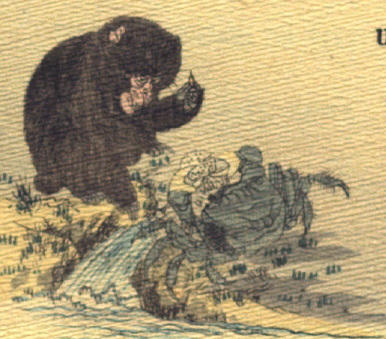

猿と蟹。小川を挟んで向って左に猿が、右に蟹がいる。猿はしゃがんで片手に柿の種を上げ、もう一方の手で蟹が掴んでいるおにぎりをさしている。蟹はハサミでおにぎりをつかんでいる。
著作者：J.Dautremer／出典：親書誌：U426_nichibunken_0106：La bataille du singe et du crabe／日付：2006／資源識別子：U426_nichibunken_0106_0002_0000
Copyright (c)2010- International Research Center for Japanese Studies, Kyoto, Japan. All rights reserved.